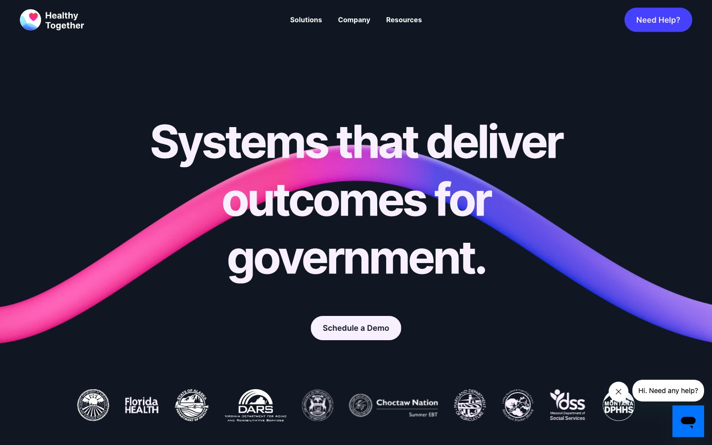

Healthy Together 的 Design.md 主题展示，围绕医疗健康、金融科技、AI、数据仪表盘组织页面。
Explore Healthy Together's mixed Fintech design system: Midnight Ink #101722, Canvas Ice #f9f0ff colors, Inter typography, and DESIGN.md for AI agents.

#101722: #101722#f9f0ff: #f9f0ff#4541fe: #4541fe#d9c6ff: #d9c6ff#ffffff: #ffffff#6c6c7a: #6c6c7a#3f424e: #3f424e#fe0f83: #fe0f83#141414: #141414#000000: #000000#040723: #040723#140f33: #140f33display: Interbody: Intermono: ui-monospacehints: Inter,ui-monospace